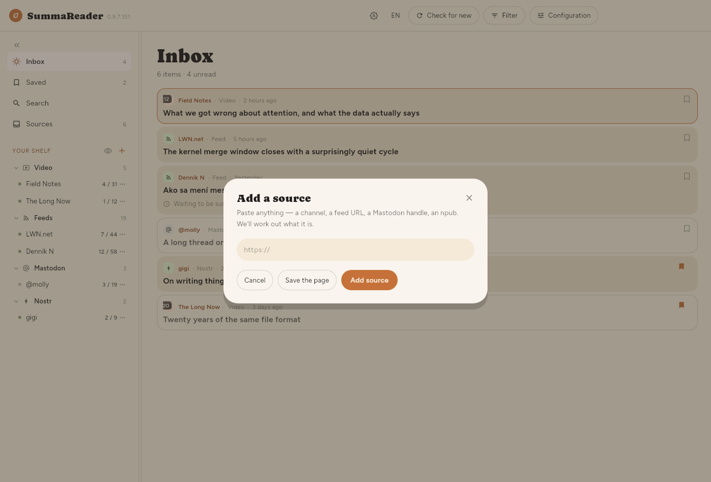
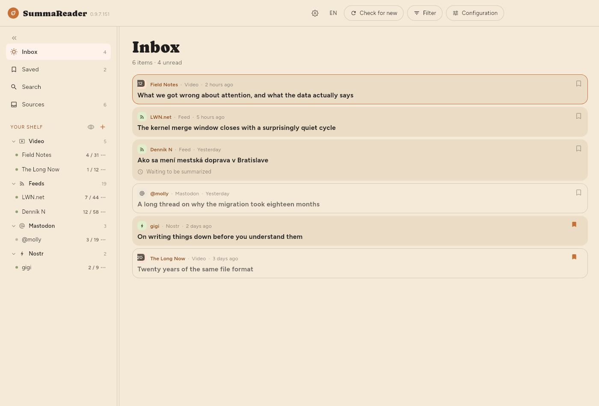
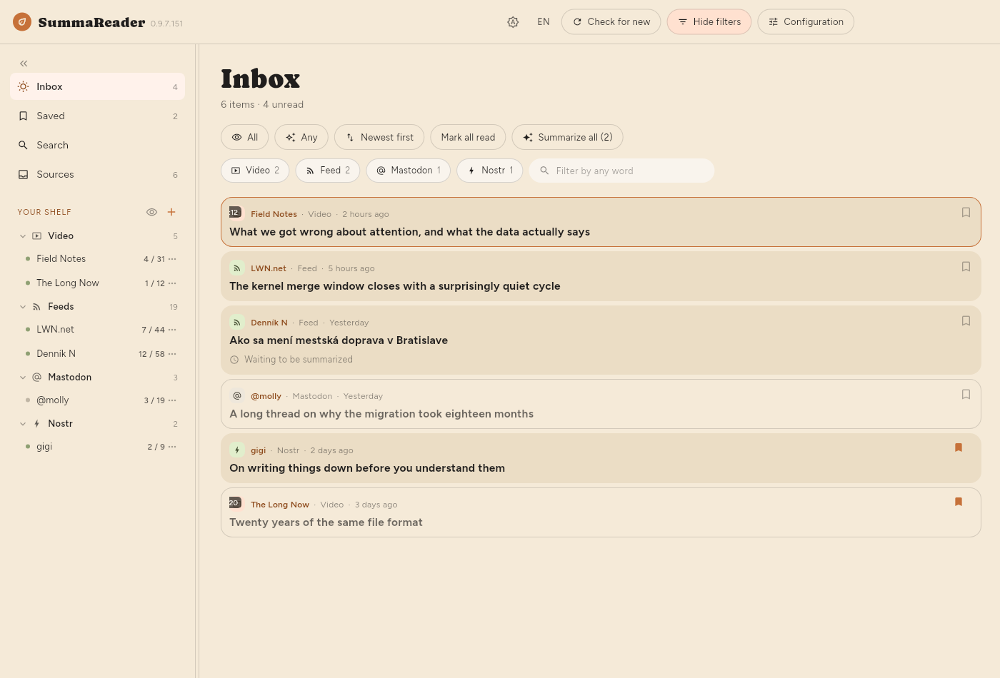
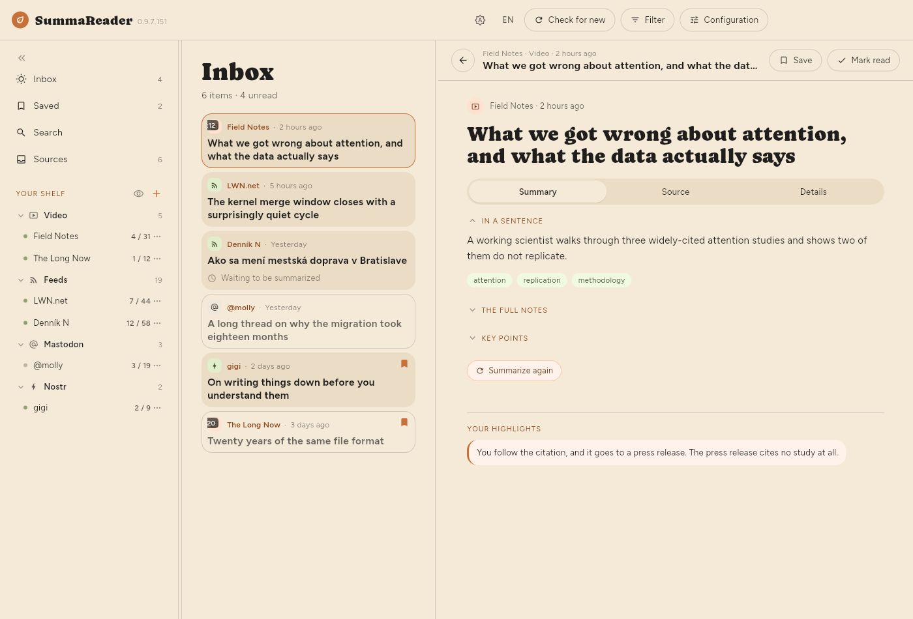
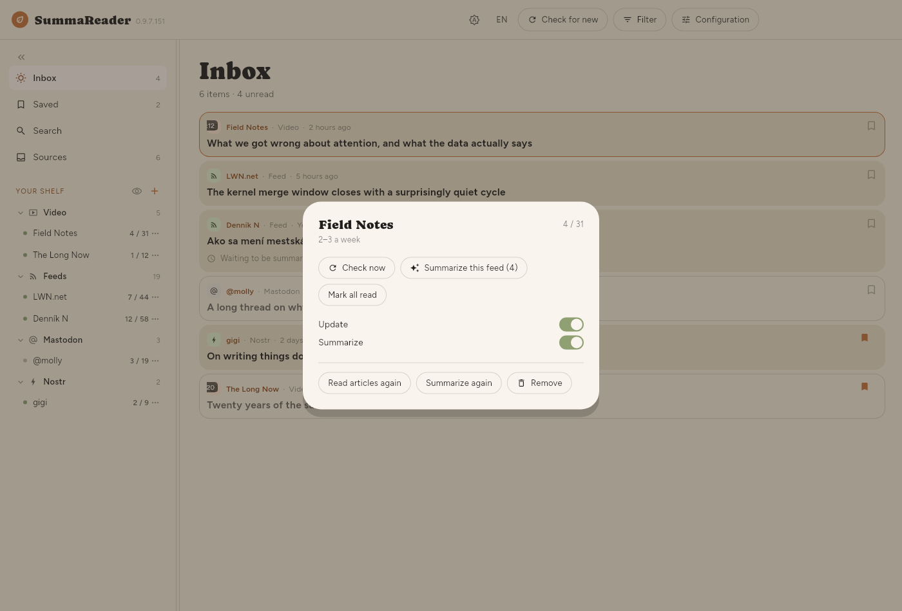

User guide
A reader that pulls in what you follow, writes a summary of each piece, and keeps what you have read in step across your own devices.
Two things shape everything below. Your library stays on your devices. And a summary is written by a language model, which costs either your battery or your money depending on where you point it — so most of the settings here are about deciding how much of that happens without being asked.
This guide covers the desktop app. Screenshots are the Linux build in its light theme, taken over a demo library — one of its sources is a Nostr account, which is the one kind that does not work yet.
- Getting started
- The window
- Reading
- Summaries
- Finding things
- Keeping things
- Managing sources
- Sync
- Keyboard
- Settings reference
- Where things are kept
Getting started
Adding your first source
SummaReader is empty until you tell it what to follow. Press + beside Your shelf, or Add source on the empty Inbox, and paste an address.

You can paste any of these and the right thing happens:
| You paste | It becomes |
|---|---|
A feed address (…/feed.xml, …/rss) | A feed |
| A site's home page | A feed, if the page advertises one |
| A YouTube channel or video address | That channel |
A Mastodon account (@name@server) | That account's posts |
| Any other page | The page itself, kept once |
Nostr is the one that is not ready: the event parser exists, the relay
transport does not, so an npub… is refused rather than
half-followed.
The dialog offers both: Add source subscribes to something that keeps delivering, Save the page keeps one page and nothing more.
Importing what you already follow
Coming from another reader, Settings → Your data → Import and export takes an OPML file. Everything in it arrives as a source.
What happens on the first check
A feed's first poll delivers whatever archive it currently advertises — fifteen videos, thirty articles. None of that is new to you, so none of it is summarized automatically. Only things published after you subscribed are. Anything older can still be summarized whenever you want it: open it and press Summarize, or use the bulk button under Summaries.
The window

The top bar
| Control | What it does |
|---|---|
| ☀ / 🌙 | Paper, night, or whatever the system says |
| EN | The interface language |
| Check for new | Fetches every source now |
| Filter | Shows and hides the filter panel |
| Configuration | Text size, density, thumbnails, layout |
Check for new and Filter appear while the list is on screen, which includes reading an article beside it. The Filter button fills in and reads Filtered whenever something is narrowing the list, so a list showing a fraction of itself always says why.
The shelf
Down the left: Inbox, Saved, Search, Sources, then your Lists, then your feeds grouped by kind. Each feed shows unread / total; each list shows what it holds.
- Click a feed to see only that feed.
- ⋯ opens that feed's own panel — see Managing sources.
- The eye beside + hides every feed with nothing waiting in it.
- « collapses the shelf to a strip of icons. b does the same.
The filter panel
Press Filter. Everything that decides what the list shows is here, and it is closed by default so the first thing under the heading is the first article.

| Control | What it does |
|---|---|
| Unread / Read / All | Which items to show |
| Any / Summarized / Not summarized | Whether a summary exists |
| Newest first | Sorting — press to cycle through six |
| Mark all read | Marks everything the filter covers |
| Summarize … | Summarizes everything the filter covers |
| Kind chips | Videos, feeds, posts — click to narrow |
| The text box | Matches any word in what is loaded |
Sorting cycles: Newest first → Oldest first → Title A–Z → Title Z–A → Feed A–Z → Feed Z–A, and back.
The read filter, the summarized filter and the sort are remembered between launches. Picking a feed is not — that is navigation, and opening into a library narrowed to one feed you chose last week reads as an empty app.
The counts under "Inbox"
Showing 18 of 5,878 · 52 unread · 812 to summarize
- Showing appears only when a filter is narrowing things, and counts the rows actually on screen.
- to summarize is the same number as the Summarize button, and is what pressing it would do.
Configuration
The handful of settings worth changing without leaving what you are reading: Text size (S/M/L/XL), List density, Thumbnails (None / Kind / Picture), line spacing and column width for the article, Reader layout, and Group by source.
List density decides how much of each item the list draws:
| Summary | Title | Picture | |
|---|---|---|---|
| Comfortable | shown | wraps freely | large |
| Compact (default) | — | two lines | small |
| Dense | — | one line | none |
Thumbnails: Picture shows each article's own image instead of a kind icon. It is the only one of the three that costs anything: pictures are downloaded a few at a time for the rows on screen, so a long backlog fills in gradually rather than all at once. Dense ignores the setting — a picture is three lines tall, which is not dense.
Reading
Click an article, or press ↵. Depending on the window and your Reader layout setting, it opens beside the list, above or below it, or takes the whole window.

The three tabs
- Summary — what the model wrote: a sentence, key points, and full notes. Points from a video carry timestamps that seek.
- Source — the article itself, or the transcript.
- Details — where it came from, when, which model summarized it and what that cost.
1–3 jump between them.
The toolbar
- Save — files it into the list the shelf shows filled in, which is Saved until you choose another. The ▾ beside it, a right-click or a press and hold picks a different list or makes one.
- Mark read — on articles from a feed. With the unread filter on, this moves you to the next one; the last one closes the reader.
- Delete — only on articles you have kept. It asks twice, and the second press says Delete everywhere? because it removes the article from every device you sync with and stops any feed bringing it back.
Moving between articles
Drag the article sideways, or use j / k. Dragging right at the first one goes back to the list. The gestures are configurable under Settings → Reading.
When there is no text
Not every article arrives with its words. The reader says which of these it is:
| It says | What happened |
|---|---|
| This video has no captions | There is no transcript to read |
| The page arrived, but there was no article in it | The page builds its text in the browser |
| The site served a bot check | A "prove you are human" page |
| Behind a subscription wall | What arrived was the offer |
| The page is gone | Taken down or moved |
| Not on this device | Another device has it, or nobody has fetched it |
Only the last is worth retrying, and Fetch the text does that.
Summaries
Where summarizing happens
Settings → Summaries → Where summaries run.
- On this device — a model you download. Nothing leaves the machine. It is slower and costs battery.
- On a server — your own, or a cloud API. Faster, costs money, and is the only time an article's text goes anywhere.
Whichever you pick gets its own tab beside Summaries, and only that one: Model for this device, LLM server for a server.
Choosing a model
Settings → Model. Search below the list, open a result's Variants to see the files inside it — they differ in size, and size is what decides whether one fits — and download the one you want.
Downloaded models are listed at the top. Select makes one the chosen model and loads it. Only one runs at a time, so choosing another one asks first: the model in memory has to go before the next arrives. The choice is remembered, and Load it when the app starts brings it back on its own.
Some models will not run at all here — a file can require graphics support this build has no way to ask for, and the app says so rather than retrying.
Automatic summaries
Summarizing runs at the end of a check for new articles. There is no separate schedule — if Check for new is set to Only when I ask, nothing is summarized unless you ask. Two things decide what a check summarizes: each feed has a Summarize switch, off by default; and Settings → Summaries → At the same time sets how many one check may do, and which end of the queue it works through.
| Setting | Meaning |
|---|---|
| Summaries per check | Default 30. No limit does everything waiting |
| Work through | Newest first keeps up with arrivals. Oldest first clears a backlog |
An article's own text is fetched during the check, not later — up to twenty per feed per round, newest first. An article that arrives without its words has usually failed rather than been deferred, and the reader says which.
Newest first is right day to day. If more arrives per check than the number allows, the ones it skips fall further behind every check — Oldest first is how you get back to them.
Every summary is a request. On a paid model, the number per check is what each check costs while you are not watching — worth choosing rather than arriving at.
Summarizing by hand
- One article — open it and press Summarize.
- One feed — its ⋯ panel, Summarize this feed.
- Whatever is filtered — the Summarize button in the filter panel. It says how many it will do, and that number is what it does.
What language a summary is in
By default, the language the article is written in. Settings → Summaries → Summary language overrides that if you would rather always read summaries in one language.
If nothing gets summarized
The most common cause is no model loaded. The toast says so, and Settings → Development → Activity log records the reason for every attempt.
Finding things
Search in the shelf, or /. Search covers titles, article text and video transcripts. A transcript hit is a moment — it names the time and seeks there when you open it.
The text box in the filter panel is a different thing: it matches the rows already loaded, and is for narrowing what is in front of you rather than searching the library.
Keeping things
Save in the reader, or s from the list. Saved articles are exempt from anything that clears space.
Lists
Saved is one list, and you can make as many more as you like — by subject, by what you mean to do with them, however you file. They live in the shelf on the left, under Lists, with what each holds beside its name.
| To | Do |
|---|---|
| Make one | + on the Lists heading, or New list in the save menu |
| Put something on it | Save files into the list shown filled in the shelf |
| Choose a different list | The ▾ beside Save, a right-click, or press and hold |
| Take it off again | Save again, on the list it is filed under |
| Rename or remove one | ⋯ beside its name, the same as a feed |
Save goes to the list you last chose. Picking a list from the menu files the article and makes that list the one plain saving uses from then on — the shelf shows which by filling in its bookmark. Until you choose otherwise that is Saved, which is what saving has always meant.
An article can be on several lists at once, and taking it off one leaves the others alone. Saved itself cannot be renamed or removed: plain saving has to have somewhere to go, and every device agrees on that one.
Removing a list leaves the articles on it, as long as a feed or another list still holds them — the same rule as removing a feed. Removing a source leaves saved articles alone, and writes down where they came from before the source goes.
Lists travel between your devices, with the articles on them.
Managing sources
One feed
⋯ on a shelf row opens that feed:

| Check now | Fetch this feed |
|---|---|
| Summarize this feed | Everything of its waiting for one |
| Mark all read | Everything of its |
| Updates | Whether checks include it |
| Auto-summarize | Whether checks summarize it |
| Read articles again | Re-fetch text that failed |
| Summarize again | Discard its summaries and redo them |
| Remove | Asks first, and says what it costs |
Summarize again is what to use after changing the summary language or the model — an article that already has a summary is never redone otherwise.
Many feeds
The Sources screen is the same controls over the whole list, with a filter and a tick box, so "every YouTube channel I imported last week" is one action rather than three hundred.
Sync
Settings → Sync. Your devices keep each other in step: what you have read, what you saved, your highlights, and the articles themselves.
It is end-to-end encrypted: the server stores ciphertext and cannot read your library. There is no hosted service to sign up for — the address you set is a server you run.
When it runs
Settings → Sync → Syncing on its own offers a clock — every 15 minutes through to once a day — and two moments instead:
- After a check — as soon as every source has been fetched, before anything is summarized. On a local model summarizing can take twenty minutes, and the articles are ready long before that.
- After summarizing — once the whole check is finished, so one sync carries the articles and their summaries together.
Whichever you pick, a metered connection or a battery interval that has not elapsed still holds it back.
Pairing a second device
- Turn sync on and set an address on the first device.
- Pair a device shows a code.
- Scan or type it on the second.
The first sync to a fresh server asks before uploading — a server that has never seen your library is a decision, not a detail.
The recovery code
Made once, under Sync. It is the only way back into your library if you lose every paired device. Nobody can reissue it.
Article text
Read state, highlights and the articles themselves travel automatically. Their words and pictures are the bulk, and by default they stay behind a pointer: sync tells this device that a copy exists, and it is fetched when you open the article.
Keep everything on this device changes that — each article's words and pictures are downloaded as they arrive. It is a setting per device rather than per library: worth it on a machine you read on offline, a lot of data on a phone for articles you will not open. Turning it on starts fetching whatever is already outstanding, a few seconds at a time, so a large library catches up over several syncs rather than in one long wait.
Keyboard
? shows this list in the app.
| Next / previous item | j k · n p · ↓ ↑ |
| Open | ↵ |
| Open the original elsewhere | v |
| Mark read / unread | m |
| Mark everything read / unread | A / U |
| Save | s |
| Refresh what is on screen | r |
| Unread / read / all | R |
| Summarized or not | S |
| Next / previous source | J K · N P · ⇧↑ ⇧↓ |
| Jump to a section | 1 – 3 |
| Fold a summary section | ⇧1 – ⇧3 |
| Search | / |
| Show or hide the shelf | b |
| Focus on the item | f |
| Cycle the layout | l |
| This list | ? |
| Back | esc |
Settings reference
- Reading
- Theme, interface language, dates and times, reader layout, gestures, when an opened article counts as read, and whether the status strip is on screen. When an opened item counts as read is worth knowing about: Never means only you mark things read, Immediately means opening counts, and After a few seconds means passing through does not.
- Summaries
- Where summaries run, which model, how many at a time, how many per check and from which end, the summary language, and what summarizing has cost so far grouped by model.
- Sync
- Sync on or off, the server address, when it runs on its own, whether this device keeps everything, paired devices, the recovery code, and the local API — a door for a browser extension or another program on your machine to put something in.
- Your data
- Import and export: OPML for sources, and your library in full.
- Development
- The activity log — everything that ran and everything that failed, which is the first place to look when something did not happen. Also Fill in missing details, which re-fetches metadata, and Erase everything.
- About
- Version, and where the library file lives.
Where things are kept
Your library is one SQLite file in the app's data directory. Settings → About names the path. Backing that file up backs up everything: articles, summaries, highlights and what you have read.